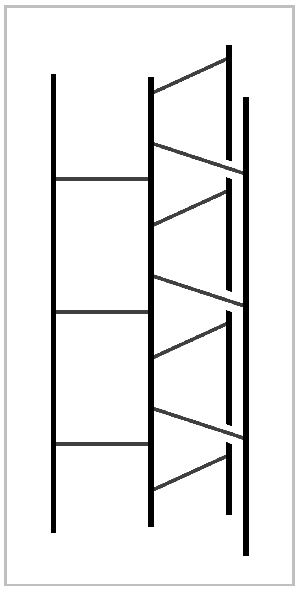
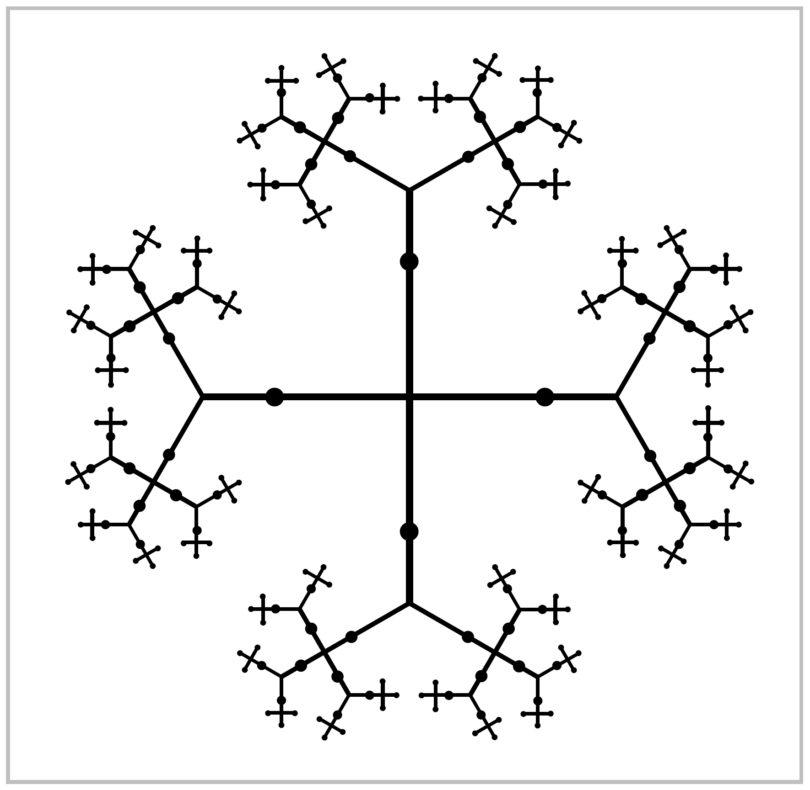
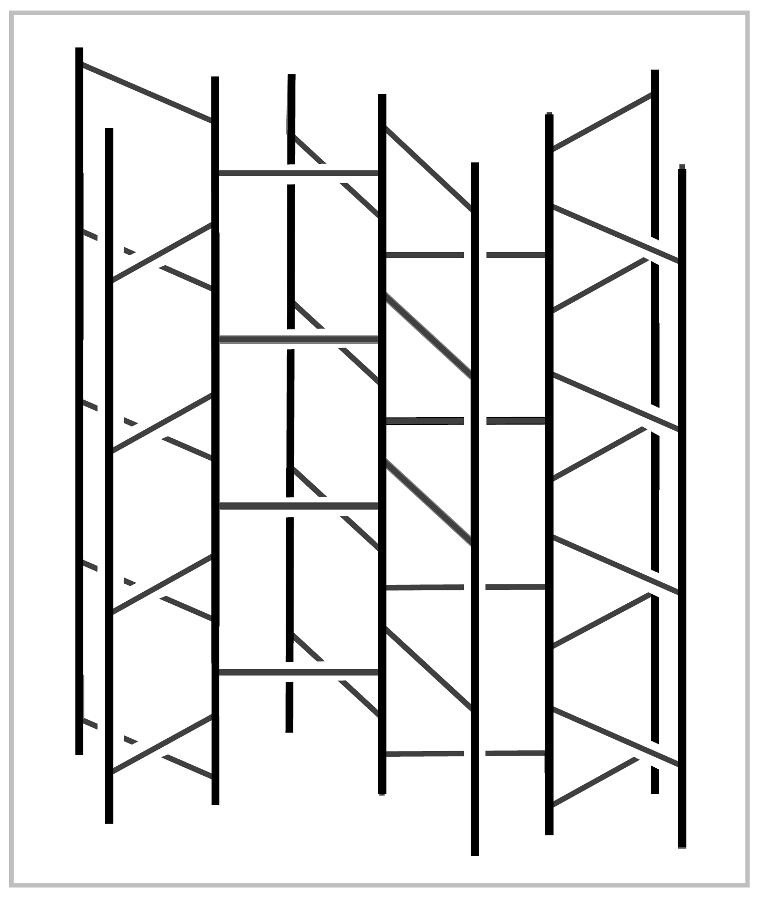
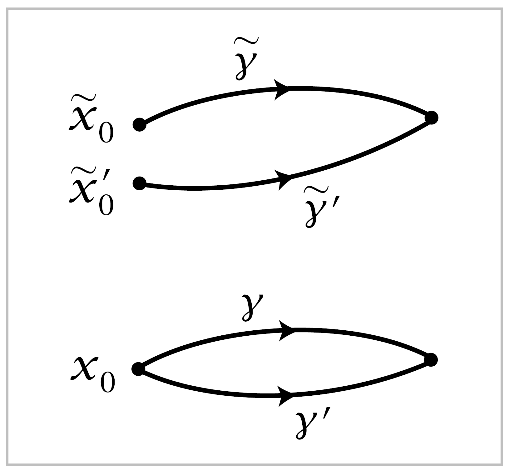

The Classification of Covering Spaces#
We consider next the problem of classifying all the different covering spaces of afixed space \(X\). Since the whole chapter is about paths, it should not be surprising that we will restrict attention to spaces \(X\) that are at least locally path-connected. Path-components of \(X\) are then the same as components, and for the purpose of classifying the covering spaces of \(X\) there is no loss in assuming that \(X\) is connected, or equivalently, path-connected. Local path-connectedness is inherited by covering spaces, so connected covering spaces of \(X\) are the same as path-connected covering spaces. The main thrust of the classification will be a correspondence between connected covering spaces of \(X\) and subgroups of \(\pi_1(X)\). This is often called the Galois correspondence because of its surprising similarity to another basic correspondence in the purely algebraic subject of Galois theory. We will also describe a different method of classification that includes disconnected covering spaces as well.
The Galois correspondence arises from the function that assigns to each covering space \(p:(\tilde{X}, \tilde{x}_0)\) the subgroup \(p_*(\pi_1(\tilde{X}, \tilde{x}_0))\) of \(\pi_1(X,x_0)\). First we consider whether this function is surjective. That is, we ask whether every subgroup of \(\pi_1(X,x_0)\) is realized as \(p_*(\pi_1(\tilde{X},\tilde{x}_0))\) for some covering space \(p:(\tilde{X},\tilde{x}_0) \rightarrow (X, x_0)\). In particular we can ask whether the trivial subgroup is realized. Since \(p_*\) is always injective, this amounts to asking whether \(X\) has a simply-connected covering space. Answering this will take some work.
A necessary condition for \(X\) to have a simply-connected covering space is the following: Each point \(x \in X\) has a neighborhood \(U\) such that the inclusion-induced map \(\pi_1(U,x) \rightarrow \pi_1(X,x)\) is trivial; one says \(X\) is semilocally simply-connected if this holds. To see the necessity of this condition, suppose \(p:\tilde{X} \rightarrow X\) is a covering space with \(\tilde{X}\) simply-connected. Every point :math:` in X` has a neighborhood \(U\) having a lift \(\tilde{U} \subset \tilde{X}\) projecting homeomorphically to \(U\) by \(p\). Each loop in \(U\) lifts to a loop in \(\tilde{U}\), and the lifted loop is nullhomotopic in \(\tilde{X}\) since \(\pi_1(\tilde{X})=0\). So, composing this nullhomotopy with \(p\), the original loop in \(U\) is nullhomotopic in \(X\).
A locally simply-connected space is certainly semilocally simply-connected. For example, CW complexes have the much stronger property of being locally contractible, as we show in the Appendix. An example of a space that is not semilocally simply-connected is the shrinking wedge of circles, the subspace \(X \subset \mathbb{R}^2\) consisting of the circles of radius \(\frac{1}{n}\) centered at the point \((\frac{1}{n},0)\) for \(n=1,2, \cdots\), introduced in Example 1.25. On the other hand, if we take the cone \(CX=(X \times I ) / (X \times \{0\})\) on the shrinking wedge of circles, this is semilocally simply-connected since it is contractible, but it is not locally simply-connected.
We shall now show how to construct a simply-connected covering space of \(X\) if \(X\) is paht-connected, locally path-connected, and semilocally simply-connected. To motivate the construction, suppose \(p:(\tilde{X}, \tilde{x}_0) \rightarrow (X,x_0)\) is a simply-connected covering space. Each point \(\tilde{x} \in \tilde{X}\) can then be joined to \(\tilde{x}_0\) by a unique homotopy class of paths, by Proposition 1.6, so we can view poitns of \(\tilde{X}\) as homotopy classes of paths starting at \(\tilde{x}_0\). The advantage of this is that, by the homotopy lifting property, homotopy classes of paths in \(\tilde{X}\) starting at \(\tilde{x}_0\) are the same as homotopy classes of paths in \(X\) starting at \(\tilde{x}_0\). This gives a way of describing \(\tilde{X}\) purely in terms of \(X\).
Given a path-connected, locally path-connected, semilocally simply-connected space \(X\) with a basepoint \(x_0 \in X\), we are therefore led to define
where, as usual, \([\gamma]\) denotes the homotopy class of \(\gamma\) with respect to homotopies that fix the endpoints \(\gamma(0)\) and \(\gamma(1)\). The function \(p:\tilde{X} \rightarrow X\) sending \([\gamma]\) to \(\gamma (1)\) is then well-defined. Since \(X\) is path-connected, the endpoint \(\gamma(1)\) can be nay point of \(X\), so \(p\) is surjective.
Before we define a topology on \(\tilde{X}\) we make a few preliminary observations. Let \(\mathcal{U}\) be hte collection of path-connected open sets \(U \subset X\) such that \(\pi_1(U) \rightarrow \pi_1(X)\) is trivial. Note that if the map \(\pi_1(U) \rightarrow \pi_1(x)\) is trivial for one choice of basepoint in \(U\), it is trivial for all choices of basepoint since \(U\) is path-connected. A path-connected open subset \(V \subset U \in \mathcal{U}\) is also in \(\mathcal{U}\) since the composition \(\pi_1(V) \rightarrow \pi_1(U) \rightarrow \pi_1(X)\) will also be trivial. It follows that \(\mathcal{U}\) is basis for the topology on \(X\) if \(X\) is locally path-connected and semilocally simply-connected.
given a set \(U \in \mathcal{U}\) and a path \(\gamma\) in \(X\) from \(x_0\) to a point in \(U\), let
As the notation indicates, \(U_{[\gamma]}\) depends only on the homotopy class \([\gamma]\). Observe that \(p:U_{[\gamma]} \rightarrow U\) is surjective since \(U\) is path-connected and injective since different choices of \(\eta\) joining \(\gamma(1)\) to a fixed \(x \in U\) are all homotopic in \(X\), the map \(\pi_1(U) \rightarrow \pi_1(X)\) being trivial. Another property is
- (*) \(U_{[\gamma]} = U_{[\gamma']}\) if \([\gamma'] \in U_{[\gamma]}\). For if \(\gamma'=\gamma \cdot \eta\) then elements of \(U_{[\gamma']}\) have the
form \([\gamma \cdot \eta \cdot \mu]\) and hence lie in \(U_{[\gamma]}\), while elements of \(U_{[\gamma]}\) have the form \([\gamma \cdot \mu] = [\gamma \cdot \eta \cdot \bar{\eta} \cdot \mu] = [\gamma' \cdot \bar{\eta} \cdot \mu]\) and hence lie in \(U_{[\gamma']}\).
This can be used to show that the sets \(U_{[\gamma]}\) form a basis for a topology on \(\tilde{X}\). For if we are given two such sets \(U_{[\gamma]},\, V_{[\gamma']}\) and an element \([\gamma''] \in U_{[\gamma]} \cap V_{[\gamma']}\), we have \(U_{[\gamma]}=U_{[\gamma'']}\) and \(V_{[\gamma']}=V_{[\gamma]''}\) by (*). So if \(W \in \mathcal{U}\) is contained in \(U \cap V\) and contains \(\gamma''(1)\) then \(W_{[\gamma'']} \subset U_{[\gamma'']} \cap V_{[\gamma'']}\) and \([\gamma''] \in W_{[\gamma'']}\).
The bijection \(p:U_{[\gamma]} \rightarrow U\) is a homeomorphism since it gives a bijection between the subsets \(V_{[\gamma']} \subset U_{[\gamma]}\) and the sets \(V \in \mathcal{U}\) contained in \(U\). Namely, in one direction we have \(p(V_{[\gamma']})=V\) and in the other direction we have \(p^{-1}(V) \cap U_{[\gamma]} =V_{[\gamma']}\) for any \([\gamma'] \in U_{[\gamma]}\) with endpoint in \(V\), since \(V_{[\gamma']} \subset U_{[\gamma']}=U_{[\gamma]}\) and \(V_{[\gamma']}\) maps onto \(V\) by the bijection \(p\).
The preceding paragraph implies that \(p:\tilde{X} \rightarrow X\) is continuous. We can also deduce that this is a covering space sincefor fixed \(U \in \mathcal{U}\), the sets \(U_{[\gamma]}\) for varying \([\gamma]\) partition \(p^{-1}(U)\) because if \([\gamma''] \in U_{[\gamma]} \cap U_{[\gamma']}\) then \(U_{[\gamma]}=U_{[\gamma'']}=U_{[\gamma']}\) by (*).
It remains only to show that \(\tilde{X}\) is simply-connected. For a point \([\gamma] \in \tilde{X}\) let \(\gamma_t\) be the path in \(X\) that equals \(\gamma\) on \([0,t]\) and is stationary at \(\gamma(t)\) on \([t,1]\). Then the function \(t\mapsto [\gamma_t]\) is a path in \(\tilde{X}\) lifting \(\gamma\) that starts at \([x_0]\), the homotopy class of the constant path at \(x_0\), and ends at \([\gamma]\). Since \([\gamma]\) was an arbitrary point in \(\tilde{X}\), this shows that \(\tilde{X}\) is path-connected. To show that \(\pi_1(\tilde{X}, [x_0])=0\) it suffices to show that the image of this group udner \(p_*\) are represented by loops \(\gamma\) at \(x_0\) that lift to loops in \(\tilde{X}\) at \([x_0]\). We have observed that the path \(t \mapsto [\gamma_t]\) lifts \(\gamma\) starting at \([x_0]\), and for this lifted path to be a loop means that \([\gamma_1]=[x_0]\). Since \(\gamma_1 = \gamma\), this says that \([\gamma]=[x_0]\), so \(\gamma\) is nullhomotopic and the image of \(p_*\) is trivial.
This completes the construction of a simply-connected covering space \(\tilde{X} \rightarrow X\). | In concrete cases one usually constructs a simply-connected covering space by more direct methods. For example, suppose \(X\) is the union of subspaces \(A\) and \(B\) for which simply-connected covering spaces \(\tilde{A} \rightarrow A\) and \(\tilde{B} \rightarrow B\) are already known. Then one can attempt to build a simply-connected covering space \(\tilde{X} \rightarrow X\) by assembling copies of \(\tilde{A}\) and \(\tilde{B}\). For example, for \(X=S^1 \vee S^1\), if we take \(A\) and \(B\) to be the two circles, then \(\tilde{A}\) and \(\tilde{B}\) are each \(\mathbb{R}\), and we can build the simply-connected cover \(\tilde{X}\) described earlier in this section by glueing together infinitely many copies of \(\tilde{A}\) and \(\tilde{B}\), the horizontal and vertical lines in \(\tilde{X}\). Here is another illustration of this method: | .. _Example 1.35:
Example 1.35. For integers \(m,n \geq 2\), let \(X_{m,n}\) be the quotient space of a cylinder \(S^1 \times I\) under the identifications \((z,0) ~ (e^{2 \pi i / m}z,0)\) and \((z,1) ~ (e^{2\pi i /n}z, 1)\). Let \(A \subset X\) and \(B \subset X\) be the quotients of \(S^1 \times [0, \frac{1}{2}]\) and \(S^1 \times [\frac{1}{2},1]\), so \(A\) and \(B\) are the mapping cylinders of \(z \mapsto z^m\) and \(z \mapsto z^n\), with \(A \cap B=S^1\). The simplest case is \(m=n=2\), when \(A\) and \(B\) are Möbius bands and \(X_{2,2}\) is the Klein bottle. We encountered the complexes \(X_{m,n}\) previously in alalyzing orus knot complements in Example 1.24.
{kind=link}
The figure for Example 1.29 at the end of preceding section shows what \(A\) looks like in the typical case \(m=3\). We have \(\pi_1(A) \approx \mathbb{Z}\), and the universal cover \(\tilde{A}\) is homeomorphic to a product \(C_m \times \mathbb{R}\) where \(C_m\) is the graph that is a cone on \(m\) points, as shown in the figure to the right .The situation for \(B\) is similar, and \(\tilde{B}\) is hoemomorphic to \(C_n \times \mathbb{R}\). Now we attempt to build the universal cover \(\tilde{X}_{m,n}\) from copies of \(\tilde{A}\) and \(\tilde{B}\). Start with a copy of \(\tilde{A}\). Its boundary, the outer edges of its fins, consists of \(m\) copies of \(\mathbb{R}\). Along each of these \(m\) boundary lines we attach a copy of \(\tilde{B}\). Each of these copies of \(\tilde{B}\) has one of its boundary lines attached to the initial copy of \(\tilde{A}\), leaving \(n-1\) boundary lines free, and we attach a new copy of \(\tilde{A}\) to each of these free boundary lines. Thus we now have \(m(n-1)+1\) copies of \(\tilde{A}\). Each of the newly attached copies of \(\tilde{A}\) has \(m-1\) free boundary lines, and to each of these lines we attach a new copy of \(\tilde{B}\). The process is now repeated ad infinitum in the evident way. Let \(\tilde{X}_{m,n}\) be the resulting space.
{kind=link}
The product structures \(\tilde{A} = C_m \times \mathbb{R}\) and \(\tilde{B}=C_n \times \mathbb{R}\) gives \(\tilde{X}_{m,n}\) the structure of a product \(T_{m,n} \times \mathbb{R}\) where \(T_{m,n}\) is an infinite graph constructed by an inductive scheme just like the construction of \(\tilde{X}_{m,n}\). Thus \(T_{m,n}\) is the union of a sequence of finite subgraphs, each obtained from the preceding by attaching new copies of \(C_m\) or \(C_n\). Each of these finite subgraphs deformation retracts onto the preceding one. The infinite concatenation of these deformation retractions, with the \(k^{th}\) graph deformation retracting to the previous one during the time interval \([\frac{1}{2^k}, \frac{1}{2^{k-1}}]\), gives a deformation retraction of \(T_{m,n}\) onto the initial stage \(C_m\). Since \(C_m\) is contractible, this means \(T_{m,n}\) is contractible, hence also \(\tilde{X}_{m,n}\), which is the product \(T_{m,n} \times \mathbb{R}\). In particular, \(\tilde{X}_{m,n}\) is simply-connected.
{kind=link}
The map that projects each copy of \(\tilde{A}\) in \(\tilde{X}_{m,n}\) to \(A\) and each copy of \(\tilde{B}\) to \(B\) is a covering space. To define this map precisely, choose a point \(x_0 \in S^1\), and then the image of the line segment \(\{x_0\} \times I\) in \(X_{m,n}\) meets \(A\) in a line segment whose preimage in \(\tilde{A}\) consists of an infinite number of line segments, appearing in the earlier figure as the horizontal segments spiraling around the central vertical axis. The picture in \(\tilde{B}\) is similar, and when we glue together all the copies of \(\tilde{A}\) and \(\tilde{B}\) to form \(\tilde{X}_{m,n}\), we do so in such a way that these horizontal segments always line up exactly. This decomposes \(\tilde{X}_{m,n}\) into infinitely many rectangles, each formed from a rectangle in an \(\tilde{A}\) and a rectangle in a \(\tilde{B}\). The covering projection \(\tilde{X}_{m,n} \rightarrow X_{m,n}\) is the quotient map that identifies all these rectangles.
Now we return to the general theory. The hypotheses for constructing a simply-connected covering space of \(X\) in fact suffice for constructing covering spaces realizing arbitrary subgroups of \(\pi_1(X)\):
Proposition 1.36. Suppose \(X\) is path-connected, locally path-connected, and semilocally simply-connected. Then for every subgroup \(H \subset \pi_1(X,x_0)\) there is a covering space \(p:X_H \rightarrow X\) such that \(p_*(\pi_1(X_H,\tilde{x}_0))= H\) for a suitably chosen basepoint \(\tilde{x}_0 \in X_H\).
Proof: For points \([\gamma],\, [\gamma']\) in the simply-connected covering space \(\tilde{X}\) constructed above, define \([\gamma] ~ [\gamma']\) to mean \(\gamma(1) =\gamma'(1)\) and \([\gamma \cdot \bar{\gamma'} \in H]\). It is easy to see that this is an equivalence relation since \(H\) is a subgroup: it is reflexive since \(H\) contains the identity element, symmetric since \(H\) is closed under inverse, and transitive since \(H\) is closed under multiplication. Let \(X_H\) be the quotient space of \(\tilde{X}\) obtained by identifying \([\gamma]\) with \([\gamma']\) if \([\gamma] ~ [\gamma']\). Note that if \(\gamma(1)=\gamma'(1)\), then \([\gamma] ~ [\gamma']\) iff \([\gamma \cdot \eta] ~ [\gamma' \cdot \eta]\). This means that if any two points in basic neighborhoods \(U_{[\gamma]}\) and \(U_{[\gamma']}\) are identified in \(X_H\) then the whole neighborhoods are identified. Hence the natural projection \(X_H \rightarrow X\) induced by \([\gamma] \mapsto \gamma(1)\) is a covering space.
If we choose for the basepoint \(\tilde{x}_0 \in X_H\) the equivalence class of the constant path \(c\) at \(x_0\), then the image of \(p_*:\pi_1(X_H, \tilde{x}_0) \rightarrow \pi_1(X,x_0)\) is exactly \(H\). This is because for a loop \(\gamma\) in \(X\) based at \(x_0\), its lift to \(\tilde{X}\) starting at \([c]\) ends at \([\gamma]\), so the image of this lifted path in \(X_H\) is a loop iff \([\gamma] ~ [c]\), or equivalently, \([\gamma] \in H\). ◻
Having taken care of the existence of covering spaces of \(X\) corresponding to all subgroups of \(\pi_1(X)\), we turn now to the question of uniqueness. More specifically, we are interested in uniqueness up to isomorphism, where an isomorphism between covering spaces \(p_1:\tilde{X}_1 \rightarrow X\) and \(p_2: \tilde{X}_2 \rightarrow X\) is a homeomorphism \(\tilde{X}_1 \rightarrow \tilde{X}_2\) such that \(p_1=p_2f\). This condition means exactly that \(f\) preserves the covering space structures, taking \(p^{-1}_1(x)\) to \(p^{-1}_2(x)\) for each \(x \in X\). The inverse \(f^{-1}\) is then also an isomorphism, and the composition of two isomorphisms is an isomorphism, so we ahve an equivalence relation.
Proposition 1.37. If \(X\) is path-connected and locally path-connected, then two path-connected covering spaces \(p_1:\tilde{X}_1 \rightarrow X\) and \(p_2:\tilde{X}_2 \rightarrow X\) are isomorphic via an isomorphism \(f:\tilde{X}_1 \rightarrow \tilde{X}_2\) taking a basepoint \(\tilde{x}_1 \in p^{-1}_1(x_0)\) to a basepoint \(\tilde{x}_2 \in p^{-1}_2(x_0)\) iff \(p_{1*}(\pi_1(\tilde{X}_1,\tilde{x}_1)) = p_{2*}(\pi_1(\tilde{X}_2, \tilde{x}_2))\).
Proof: If there is an isomorphism \(f:(\tilde{X}_1, \tilde{x}_1) \rightarrow (\tilde{X}_2, \tilde{x}_2)\), then from the two relations \(p_1=p_2f\) and \(p_2=p_1f^{-1}\) it follows that \(p_{1*}(\pi_1(\tilde{X}_1,\tilde{x}_1))=p_{2*}(\pi_1(\tilde{X}_2,\tilde{x}_2))\). Conversely, suppose that \(p_{1*}(\pi_1(\tilde{X}_1,\tilde{x}_1))=p_{2*}(\pi_1(\tilde{X}_2,\tilde{x}_2))\). By the lifting criterion, we may lift \(p_1\) to a map \(\tilde{p}_1:(\tilde{X}_1,\tilde{x}_1) \rightarrow (\tilde{X}_2,\tilde{x}_2)\) with \(p_2\tilde{p}_1 = p_1\). Symmetrically, we obtain \(\tilde{p}_2:(\tilde{X}_2,\tilde{x}_2) \rightarrow (\tilde{X}_1,\tilde{x}_1)\) with \(p_1\tilde{p}_2 = p_2\). Then by the unique lifting property, \(\tilde{p}_1\tilde{p}_2 = \mathbb{1}\) and \(\tilde{p}_2\tilde{p}_1=\mathbb{1}\) since these composed lifts fix the basepoints. Thus \(\tilde{p}_1\) and \(\tilde{p}_2\) are inverse isomorphisms. ◻
Theorem 1.38. Let \(X\) be path-connected, locally path-connected, and semilocally simply-connected. Then there is a bijection between the set of basepoint-preserving isomorphism classes of path-connected covering spaces \(p:(\tilde{X},\tilde{x}_0) \rightarrow(X,x_0)\) and the set of subgroups of \(\pi_1(X, x_0)\), obtained by associating the subgroup \(p_*(\pi_1(\tilde{X}, \tilde{x}_0))\) to the covering space \((\tilde{X}, \tilde{x}_0)\). If basepoints are ignored, this correspondence gives a bijection between isomorphism classes of path-connected covering spaces \(p:\tilde{X} \rightarrow X\) and conjugacy classes of subgroups of \(\pi_1(X,x_0)\).
Proof: It remains only to prove the last statement. We show that for covering space \(p:(\tilde{X}, \tilde{x}_0) \rightarrow (X, x_0)\), changing the basepoint \(\tilde{x}_0\) within \(p^{-1}(x_0)\) corresponds exactly to changing \(p_*(\pi_1(\tilde{X},\tilde{x}_0))\) to a conjugate subgroup of \(\pi_1(X,x_0)\). Suppose that \(\tilde{x}_1\) is another basepoint in \(p^{-1}(x_0)\), and let \(\tilde{\gamma}\) be a path from \(\tilde{x}_0\) to \(\tilde{x}_1\). Then \(\tilde{\gamma}\) projects to a loop \(\gamma\) in \(X\) representing some element \(g \in \pi_1(X,x_0)\). Set \(H_i = p_*(\pi_1(\tilde{X},\tilde{x}_i))\) for \(i=0,1\). We have an inclusion \(g^{-1}H_0g \subset H_1\) since for \(\tilde{f}\) a loop at \(\tilde{x}_0,\, \bar{\tilde{\gamma}}\cdot \tilde{f} \cdot \tilde{\gamma}\) is a loop at \(\tilde{x}_1\). Similarly we have \(gH_1g^{-1} \subset H_0\). Conjugating the latter relation by \(g^{-1}\) gives \(H_1 \subset g^{-1}H_0g\), so \(g^{-1}H_0g=H_1\). Thus, changing the basepoint from \(\tilde{x}_0\) to \(\tilde{x}_1\) changes \(H_0\) to the conjugate subgroup \(H_1 = g^{-1}H_0g\).
Conversely, to change \(H_0\) to a conjugate subgroup \(H_1 = g^{-1}H_0g\), choose a loop \(\gamma\) representing \(g\), lift this to a path \(\tilde{\gamma}\) starting at \(\tilde{x}_0\), and let \(\tilde{x}_1=\tilde{\gamma}(1)\). The preceding argument then shows that we have hte desired relation \(H_1 = g^{-1}H_0g\). ◻
A consequence of the lifting criterion is that a simply-connected covering space of a path-connected, locally path-connected space \(X\) is a covering space of \(X\) is therefore called a universal cover. It is unique up to isomorphism, so one is justified in calling it the universal cover.
More generally, there is a partial ordering on the various path-connected covering spaces of \(X\), according to which ones covver which others. This corresponds to the partial ordering by inclusion of the corresponding subgroups of \(\pi_1(X)\), or conjugacy classes of subgroups if basepoints are ignored.
Representing Covering Spaces by Permutations#
We wish to describe now another way of classifying the different covering spaces of a connected, locally path-connected, semilocally simply-connected space \(X\), without restricting just to connected covering spaces.

To give this idea, consider the \(3\)-sheeted covering spaces of \(S^1\). There are three of these, \(\tilde{X}_1,\, \tilde{X}_2\), and \(\tilde{X}_3\), with the subscript indicating the number of components. For each of these covering spaces \(p:\tilde{X}_i \rightarrow S^1\) the three different lifts of a loop in \(S^1\) generating \(\pi_1(S^1,x_0)\) determine a permutation of \(p^{-1}(x_0)\) sending the starting point of the lift to the ending point of the lift. For \(\tilde{X}_1\) this is a cyclic permutation, for \(\tilde{X}_2\) it is a transposition of two points fixing the third point, and for \(\tilde{X}_3\) it is the identity permutation. These permutations obviously determine the covering spaces uniquely, up to isomorphism. The same would be true for \(n\)-sheeted covering spaces of \(S^1\) for arbitrary \(n\), even for \(n\) infinite.
The covering spaces of \(S^1 \vee S^1\) can be encoded using the same idea. Referring back to the large table of examples near the beginning of this section, we see in the covering space (1) that the loop \(a\) lifts to the identity permutation of the two vertices and \(b\) lifts to the permutation that transposes the two vertices. In (2), both \(a\) and \(b\) lift to transpositions of the two vertices. In (3) and (4), \(a\) and \(b\) lift to transpositions of different pairs of the three vertices, while in (5) and (6) they lift to cyclic permutations of the vertices. In (11) the vertices can be labeled by \(\mathbb{Z}\), with \(a\) lifting to the identity permutation and \(b\) lifting to the shift \(n\mapsto n+1\). Indeed, one can see from these examples that a covering space of \(S^1 \vee S^1\) is nothing more than an efficient graphical representation of a pair of permutations of a given set.
This idea of lifting loops to permutations generalized to arbitrary covering spaces. For a covering space \(p:\tilde{X} \rightarrow X\), a path \(\gamma\) in \(X\) has a unique lift \(\tilde{\gamma}\) starting at a given point of \(p^{-1}(\gamma(0))\), so we obtain a well-defined map \(L_\gamma : p^{-1}(\gamma(0)) \rightarrow p^{-1}(\gamma(1))\) by sending the starting point \(\tilde{\gamma(0)}\) of each lift \(\tilde{\gamma}\) to its ending point \(\tilde{\gamma}(1)\). It is evident that \(L_\gamma\) is a bijection since \(L_\bar{\gamma}\) is its inverse. For a composition of paths \(\gamma \cdot \eta\) we have \(\L_{\gamma \cdot \eta}=L_\eta L_\gamma\), rather than \(L_\gamma L_\eta\), since composition of paths is written from left to right while composition of functions is written from right to left. To compensate for this, let us modify the definition by replacing \(L_\gamma\) by its inverse. Thus the new \(L_\gamma\) is a bijection \(p^{-1}(\gamma(1))\rightarrow p^{-1}(\gamma(0))\), and \(L_{\gamma \cdot \eta}=L_\gamma L_\eta\). Since \(L_\gamma\) depends only on the homotopy class of \(\gamma\), this means that if we restrict attention to loops at a basepoint \(x_0 \in X\), then the association \(\gamma \mapsto L_\gamma\) gives a homomorphism from \(\pi_1(X,x_0)\) to the group of permutations of \(p^{-1}(x_0)\). This is called the action of \(\pi_1(X,x_0)\) on the fiber \(p^{-1}(x_0)\).
Let us see how the covering space \(p:\tilde{X}\rightarrow X\) can be reconstructed from the associated action of \(\pi_1(X,x_0)\) on the fiber \(F=p^{-1}(x_0)\), assuming that \(X\) is path-connected, locally path-connected, and semilocally simply-connected, so it has a universal cover \(\tilde{X}_0 \rightarrow X\). We can take the points of \(\tilde{X}_0\) to be homotopy classes of paths in \(X\) starting at \(x_0\), as in the general construction of a universal cover. Define a map \(h:\tilde{X}_0 \times F \rightarrow \tilde{X}\) sending a pair \(([\gamma], \tilde{x}_0)\) to \(\tilde{\gamma}(1)\) where \(\tilde{\gamma}\) is the lfit of \(\gamma\) to \(\tilde{X}\) starting at \(\tilde{x}_0\). Then \(h\) is continuous, and in fact a local homeomorphism, since a neighborhood of \(([\gamma], \tilde{x}_0)\) in \(\tilde{X}_0 \times F\) consists of the pairs \(([\gamma \cdot \eta], \tilde{x}_0)\) with \(\eta\) a path in a suitable neighborhood of \(\gamma(1)\). It is obvious that \(h\) is surjective since \(X\) is path-connected. If \(h\) were injective as well, it would be a homeomorphism, which is unlikely since \(\tilde{X}\) is probably not homeomorphic to \(\tilde{X}_0 \times F\). Even if \(h\) is not injective, it will induce a homeomorphism from some quotient space of \(\tilde{X}_0 \times F\) onto \(\tilde{X}\). To see what this quotient space is, suppose \(h([\gamma], \tilde{x}_0) = h([\gamma'], \tilde{x}_0')\).
{kind=link}
Then \(\gamma\) and \(\gamma'\) are both paths from \(x_0\) to the same endpoint, and from the figure we see that \(\tilde{x}_0'=L_{\gamma' \cdot \bar{\gamma}}(\tilde{x}_0)\). Letting \(\lambda\) be the loop \(\gamma' \cdot \bar{\gamma}\), this means that \(h([\gamma], \tilde{x}_0) = h([\lambda \cdot \gamma], L_\lambda(\tilde{x}_0))\). Conversely, for any loop \(\lambda\) we have \(h([\gamma], \tilde{x}_0) = h([\lambda \cdot \gamma], L_\lambda(\tilde{x}_0))\). Thus \(h\) induces a well-defined map to \(\tilde{X}\) from the quotient space of \(\tilde{X}_0 \times F\) obtained by identifying \(([\gamma],\tilde{x}_0)\) with \(([\lambda \cdot \gamma], L_\lambda(\tilde{x}_0))\) for each \([\lambda] \in \pi_1(X,x_0)\). Let this quotient space be denoted \(\tilde{X}_\rho\) where \(\rho\) is the homomorphism from \(\pi_1(X,x_0)\) to the permutation group of \(F\) specified by the action.
Notice that the definition of \(\tilde{X}_\rho\) makes sense whenever we are given an action \(\rho\) of \(\pi_1(X,x_0)\) on a set \(F\) regarded as a space with the discrete topology. There is a natural projection \(\tilde{X}_\rho \rightarrow X\) sending \(([\gamma], \tilde{x}_0)\) to \(\gamma(1)\), and this is a covering space since if \(U \subset X\) is an open set over which the universal cover \(\tilde{X}_0\) is a product \(U \times \pi_1(X,x_0)\), then the identifications defining \(\tilde{X}_\rho\) simply collapse \(U \times \pi_1(X, x_0) \times F\) to \(U \times F\).
Returning to our given covering space \(\tilde{X} \rightarrow X\) with associated action \(\rho\), the map \(\tilde{X}_\rho \rightarrow \tilde{X}\) induced by \(h\) is a bijection and therefore a homeomorphism since \(h\) was a local homeomorphism. Since this homeomorphism \(\tilde{X}_\rho \rightarrow \tilde{X}\) takes each fiber of \(\tilde{X}_\rho\) to the corresponding fiber of \(\tilde{X}\), it is an isomorphism of covering spaces.
If two covering spaces \(p_1:\tilde{X} \rightarrow X\) and \(p_2: \tilde{X}_2 \rightarrow X\) are isomorphic, one may ask how the corresponding actions of \(\pi_1(X,x_0)\) on the fibers \(F_1\) and \(F_2\) over \(x_0\) are related. An isomorphism \(h:\tilde{X}_1 \rightarrow \tilde{X}_2\) restricts to a bijection \(F_1 \rightarrow F_2\), and evidently \(L_\gamma(h(\tilde{x}_0)) = h(L-\gamma (\tilde{x}_0))\). Using the less cumbersome notation \(\gamma \tilde{x}_0\) for \(L_\gamma (\tilde{x}_0)\), this relation can be written more concisely as \(\gamma h (\tilde{x}_0) = h(\gamma \tilde{x}_0)\). A bijection \(F_1 \rightarrow F_2\) with this property is what one would naturally call an isomorphism of sets with \(\pi_1(X,x_0)\) action. Thus isomorphic covering spaces have isomorphic actions on fibers. The converse is also true, and easy to prove. One just observes that for isomorphic actions \(\rho_1\) and \(\rho_2\), an isomorphism \(h:F_1 \rightarrow F_2\) induces a map \(\tilde{X}_{\rho_1} \rightarrow \tilde{X}_{\rho_2}\) and \(h^{-1}\) induces a similar map in the opposite direction, such that the compositions of these two maps, in either order, are the identity.
This shows that \(n\)-sheeted covering spaces of \(X\) are classified by equivalence classes of homomorphisms \(\pi_1(X,x_0) \rightarrow \Sigma _n\), where \(\Sigma_n\) is the symmetric group on \(n\) symbols and the equivalence relation identifies a homomorphism \(\rho\) with each of its conjugates \(h^{-1}\rho h\) by elements \(h \in \Sigma_n\). The study of the various homomorphisms from a given group to \(\Sigma_n\) is a very classical topic in group theory, so we see that this algebraic question has a nice geometric interpretation.